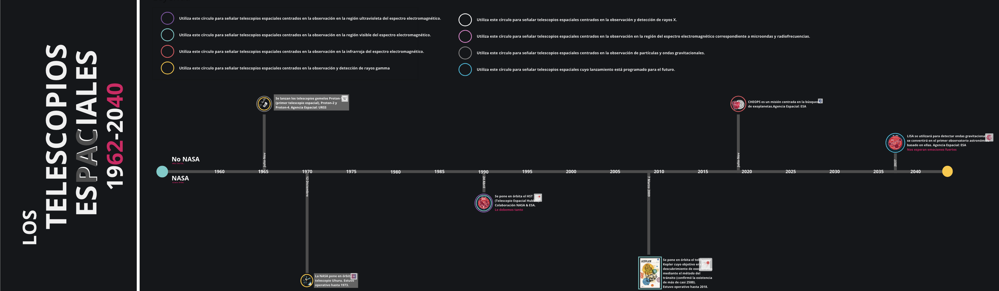

Trabajo colaborativo: Timeline Telescopios Espaciales
En esta ocasión os proponemos que de forma colaborativa creemos una línea temporal donde recopilemos la fecha de puesta en órbita de todos los telescopios espaciales de la historia indicando, brevemente, algunas de sus características. Para ello hemos diseñado un tablero interactivo que podréis editar para colocar sobre él, ordenados cronológicamente, los hitos más importantes ligados a telescopios espaciales. Para poder realizar esta tarea deberéis indagar por internet.
Para que os sea más sencillo os hemos creado un par de ejemplos sobre dicho tablero. Por favor, seguid la estructura que hemos diseñado: debéis incluir un título, un enlace al hito que queréis reflejar en el eje cronológico y situarlo correctamente sobre el eje temporal proporcionado.
Para acceder al tablero interactivo solo tenéis que hacer clic sobre el siguiente enlace o la imágen que aparece bajo estas líneas.
